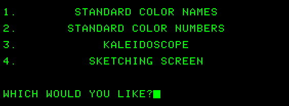

Xerox Alto
To use early computers, users had to type commands. Here's a picture of one early computer screen:

But in 1973, Xerox Corporation pioneered a radically new computer called Alto. This computer had the first mouse and graphical user interface (GUI), allowing users to move a pointer and click the screen to indicate what they wanted to do instead of typing commands. You can see the Alto below.
Alto eventually revolutionized personal computing, but not because of Xerox. In fact, Xerox eventually stopped the Alto project. But just before they did, a young entrepreneur named Steve Jobs heard about Alto and visited Xerox. He was stunned by what he saw and recognized its potential immediately. He went back to his own company, Apple, and quietly developed the Macintosh, which became first popular personal computer with a GUI and a mouse. Apple changed the face of computing forever.
In the picture of Alto below, the mouse, keyboard, and screen are on the desk, and the system unit (the main computer box) is below the desk.
Alto

https://www.wired.com/wp-content/uploads/blogs/wiredenterprise/wp-content/uploads/2012/07/photo3-150x150.jpg